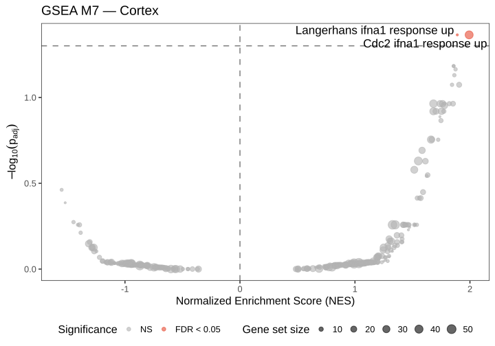
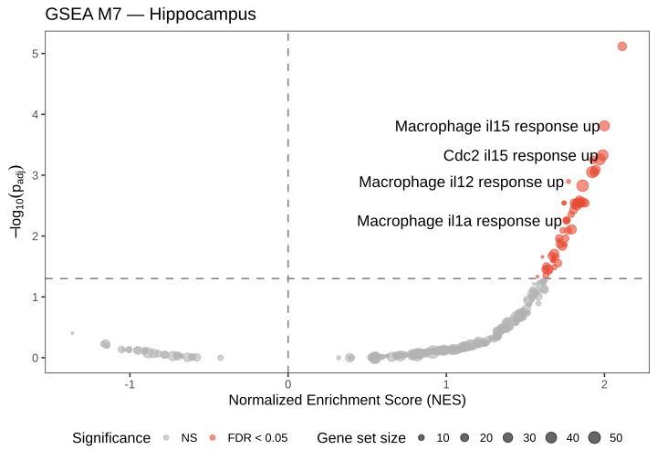
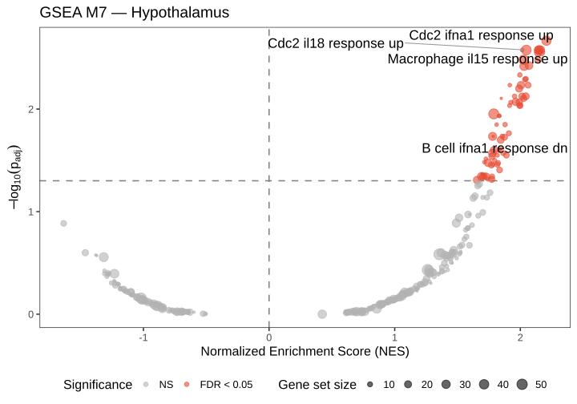
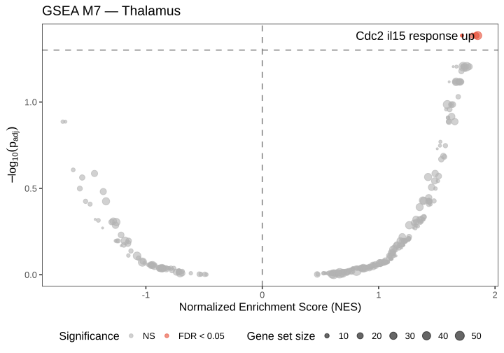
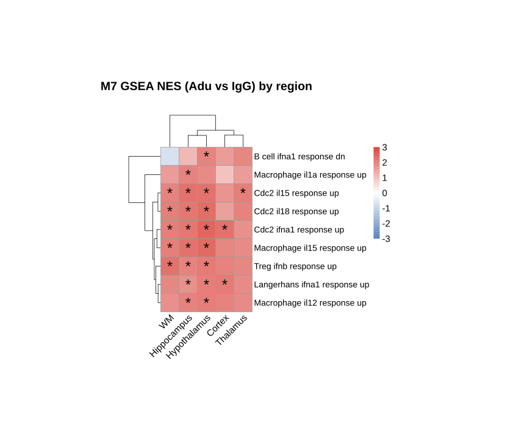

Code
library(msigdbr)
library(fgsea)
library(tidyverse)
library(kableExtra)
library(ggrepel)
library(pheatmap)Aducanumab vs IgG, per-region fgsea against MSigDB M7 (Immunologic Signatures) mouse gene sets
March 4, 2026
Gene Set Enrichment Analysis (GSEA) was applied to characterise the immunological pathways altered in microglia by aducanumab treatment, across individual brain regions. The analysis uses ranked gene lists derived from the pseudobulk DESeq2 results and tests them against the M7 Immunologic Signature gene sets from MSigDB.
M7 rationale. M7 gene sets represent cell states and perturbations within the immune system, with the initial release curated from Cui et al. 2023. These sets catalogue cell-type-specific transcriptional responses of mouse immune cells to 86 cytokines in vivo, making them highly appropriate for interpreting microglial responses to immunotherapy. See also the Immune Dictionary Portal for more information.
Panel constraint. The Xenium panel targets approximately 480 genes. Because GSEA only ranks genes present in the data, the effective size of each gene set reflects its intersection with this panel. To retain gene sets with as few as five panel-represented members, minSize = 5 was used (compared with the conventional threshold of 15 used for whole-transcriptome data). No explicit panel filter was applied: fgsea automatically intersects the ranked list with each pathway, so effective sizes already reflect the panel constraint.
Interpretation of NES. The Normalized Enrichment Score (NES) measures whether a gene set is over-represented at the top or bottom of the ranked gene list. It is normalized for gene set size, allowing comparison across pathways and regions. NES > 0 indicates that genes in the set are disproportionately upregulated in aducanumab-treated microglia; NES < 0 indicates disproportionate upregulation in IgG controls. Pathway redundancy within each region was reduced using collapsePathways (threshold p < 0.01) before cross-region comparison.
Regions available: Cortex, Hippocampus, Hypothalamus, Thalamus, WM Panel genes: 370 The table below quantifies how many panel genes are represented in the M7 collection, and how many M7 gene sets have at least one panel member.
m7_genes <- unique(gene_sets$gene_symbol)
tibble(
panel_size = length(panel_genes),
m7_unique_genes = length(m7_genes),
panel_in_m7 = sum(panel_genes %in% m7_genes),
pct_covered = round(100 * sum(panel_genes %in% m7_genes) / length(panel_genes), 1),
genesets_with_overlap = sum(map_int(gene_sets_list, \(g) sum(g %in% panel_genes)) > 0)
) |>
kbl(caption = "Panel coverage in M7 gene sets") |>
kable_styling("striped")| panel_size | m7_unique_genes | panel_in_m7 | pct_covered | genesets_with_overlap |
|---|---|---|---|---|
| 370 | 5981 | 274 | 74.1 | 690 |
For each brain region, genes are ranked by avg_log2FC (Adu vs IgG), and fgsea is run against all M7 gene sets. Results are displayed as a volcano plot of NES vs −log10(adjusted p). All points are plotted; significant pathways (FDR < 0.05) are highlighted in red.
Because M7 contains many gene sets with overlapping membership, redundant significant pathways are reduced using collapsePathways (fgsea; p-value threshold 0.01). This procedure identifies a subset of representative (non-redundant) pathways (collapsed pathways), such that no two retained pathways share an unexpectedly large fraction of their leading-edge genes.
For clarity, only these collapsed pathways are labelled on the volcano; the remaining significant-but-redundant pathways remain visible as unlabelled red points. Pathway labels are cleaned by stripping the leading collection prefix (e.g. GSE12345_, GOLDRATH_) and converting underscores to spaces.
gsea_by_region <- imap(de_by_region, \(de_res, reg) {
# Build ranked list: avg_log2FC sorted descending, all panel genes
gene_ranks <- de_res |>
rownames_to_column("gene") |>
arrange(desc(avg_log2FC)) |>
(\(d) setNames(d$avg_log2FC, d$gene))()
res <- fgsea(
pathways = gene_sets_list,
stats = gene_ranks,
eps = 0.0,
minSize = 5, # lowered from 15: panel has only ~480 genes
maxSize = 500
)
sig <- res |> filter(padj < 0.05) |> arrange(desc(NES))
cat("\n\n##", reg, "\n\n")
if (nrow(sig) == 0) {
cat("_No significant pathways (padj < 0.05)._\n\n")
return(list(fgsea = res, significant = sig, gene_ranks = gene_ranks))
}
# Collapse redundant pathways within region
collapsed <- collapsePathways(
fgseaRes = res |> filter(padj < 0.05),
pathways = gene_sets_list[sig$pathway],
pval.threshold = 0.01,
stats = gene_ranks
)
sig_collapsed <- sig |> filter(pathway %in% collapsed$mainPathways)
# NES volcano plot
volcano_data <- res |>
mutate(
neg_log10_padj = -log10(padj),
significant = padj < 0.05,
pathway_label = pathway |>
str_remove("^[A-Z0-9]+_") |>
str_replace_all("_", " ") |>
str_to_sentence()
)
p <- ggplot(volcano_data, aes(x = NES, y = neg_log10_padj)) +
geom_hline(yintercept = -log10(0.05), linetype = "dashed", colour = "grey50") +
geom_vline(xintercept = 0, linetype = "dashed", colour = "grey50") +
geom_point(aes(size = size, colour = significant), alpha = 0.6) +
geom_text_repel(
data = \(d) filter(d, pathway %in% collapsed$mainPathways),
aes(label = pathway_label),
size = 6, max.overlaps = 20, segment.colour = "grey60"
) +
scale_colour_manual(
values = c("TRUE" = "#E64B35", "FALSE" = "grey70"),
labels = c("TRUE" = "FDR < 0.05", "FALSE" = "NS")
) +
scale_size_continuous(range = c(1, 6), name = "Gene set size") +
labs(
title = paste("GSEA M7 \u2014", reg),
x = "Normalized Enrichment Score (NES)",
y = expression(-log[10](p[adj])),
colour = "Significance"
) +
theme_bw(base_size = 16) +
theme(panel.grid = element_blank(), legend.position = "bottom")
print(p)
list(fgsea = res, significant = sig_collapsed, gene_ranks = gene_ranks)
})


No significant pathways (padj < 0.05).

The heatmap displays only collapsed pathways. Taking the union of each region’s collapsed main pathways yields a de-duplicated catalogue of biologically distinct immunological programmes altered by aducanumab, free of the inflation that arises when many highly overlapping gene sets reach significance simultaneously.
For each retained pathway, the NES from every region is assembled into a matrix and displayed as a hierarchically clustered heatmap. Asterisks mark cells where the pathway also meets FDR < 0.05 in that region.
all_gsea_long <- imap(gsea_by_region, \(res, reg) {
res$fgsea |> mutate(Region = reg)
}) |> list_rbind()
# Union of collapsed (non-redundant) main pathways across all regions
sig_pathways <- gsea_by_region |>
map(\(res) res$significant$pathway) |>
purrr::reduce(union)
if (length(sig_pathways) > 0) {
clean_label <- function(x) {
x |>
str_remove("^[A-Z0-9]+_") |>
str_replace_all("_", " ") |>
str_to_sentence()
}
nes_matrix <- all_gsea_long |>
filter(pathway %in% sig_pathways) |>
pivot_wider(id_cols = pathway, names_from = Region, values_from = NES) |>
mutate(pathway = clean_label(pathway)) |>
column_to_rownames("pathway") |>
as.matrix()
padj_matrix <- all_gsea_long |>
filter(pathway %in% sig_pathways) |>
pivot_wider(id_cols = pathway, names_from = Region, values_from = padj) |>
mutate(pathway = clean_label(pathway)) |>
column_to_rownames("pathway") |>
as.matrix()
display_matrix <- ifelse(!is.na(padj_matrix) & padj_matrix < 0.05, "*", "")
clim <- ceiling(max(abs(nes_matrix), na.rm = TRUE))
pheatmap(nes_matrix,
color = colorRampPalette(c("#4575b4", "white", "#d73027"))(100),
breaks = seq(-clim, clim, length.out = 101),
na_col = "grey88",
display_numbers = display_matrix,
fontsize_number = 24,
number_color = "black",
cluster_rows = TRUE,
cluster_cols = TRUE,
main = "M7 GSEA NES (Adu vs IgG) by region\n",
fontsize = 15,
fontsize_row = 14,
angle_col = 45,
cellwidth = 30,
cellheight = 30
)
} else {
message("No significant pathways across any region — heatmap skipped.")
}
Collapsible tables listing significant (after collapsePathways within each region) M7 pathways per region, with NES, adjusted p-value, effective gene set size, and the leading-edge genes driving enrichment.
iwalk(gsea_by_region, \(res, reg) {
cat("\n\n<details><summary>**", reg, "** significant pathways</summary>\n\n")
if (nrow(res$significant) > 0) {
res$significant |>
select(pathway, NES, padj, size, leadingEdge) |>
mutate(
pathway = str_remove(pathway, "^[A-Z0-9]+_") |>
str_replace_all("_", " ") |>
str_to_sentence(),
padj = signif(padj, 3),
NES = round(NES, 2),
leadingEdge = map_chr(leadingEdge, \(x) paste(x, collapse = ", "))
) |>
arrange(padj) |>
kbl(caption = paste("M7 GSEA \u2014", reg)) |>
kable_styling("striped") |>
print()
} else {
cat("No significant pathways.\n\n")
}
cat("\n\n</details>\n\n")
})| pathway | NES | padj | size | leadingEdge |
|---|---|---|---|---|
| Cdc2 ifna1 response up | 2.04 | 0.0279 | 39 | C3, Ccl5, Ifitm3, Cxcl10, Lgals3bp, Ifit2, Ccl12, Ifit1, Axl, C1qb, Hif1a, Selplg, Ldlr, Bcl2a1b, Pgd, Hk3, Etnk1, Ly86, Aif1, Grn, Acer3, Clec2d, Sat1, Pnp |
| Langerhans ifna1 response up | 1.91 | 0.0418 | 5 | Ifitm3, Cxcl10, Lgals3bp, Ifit2, Ifit1 |
| pathway | NES | padj | size | leadingEdge |
|---|---|---|---|---|
| Monocyte il15 response up | 2.15 | 4.80e-06 | 23 | Ccl12, Msr1, Cxcl10, Ifit2, Ccl2, Ifit1, Acod1, Vim, C3, Ccl4, Clec2d |
| Macrophage il15 response up | 2.02 | 2.30e-04 | 35 | Ccl12, Msr1, Cxcl10, Ifit2, Ccl2, Il1b, Ifit1, Ifitm3, Ccl5, Acod1, Ccl4, Clec2d |
| Cdc2 ifna1 response up | 1.99 | 4.23e-04 | 39 | Ccl12, Cxcl10, Ifit2, Ccl2, Ifit1, Lgals3, Ifitm3, Ccl5, C3, Axl, Clec2d, Plin2, Lgals3bp, Bcl2a1b, Ldlr |
| Macrophage il12 response up | 1.79 | 8.79e-04 | 6 | Ccl12, Cxcl10, Ifit2, Ccl2, Ifit1 |
| Macrophage il1b response up | 1.82 | 6.32e-03 | 18 | Ccl12, Msr1, Ccl2, Il1b, Lgals3, Ifitm3, Hmox1, Plin2, Bcl2a1b |
| pathway | NES | padj | size | leadingEdge |
|---|---|---|---|---|
| Cdc2 ifna1 response up | 2.17 | 0.00184 | 39 | Lgals3, Ifitm3, Ccl5, C3, Cxcl10, Lgals3bp, Ccl2, Bcl2a1b, Axl, Ifit1, Ifit2, Hk3, Aif1, Ccl12, Plin2, Clec2d, Grn |
| Macrophage il15 response up | 2.13 | 0.00184 | 35 | Ifitm3, Ccl5, Il1b, Cxcl10, Msr1, Cd74, Ccl4, Ccl2, Bcl2a1b, Ifit1, Ifit2, Hk3, Ccl12, Hilpda, Junb, Acod1, Clec2d |
| Cdc2 il18 response up | 2.05 | 0.00184 | 43 | C3, Cxcl10, Tnf, Lgals3bp, Vim, Plac8, Myo1e, Ccl2, Bcl2a1b, Lpl, Ifit1, Mgl2, Ifit2, Hk3, Aif1, Ccl12 |
| Migdc il3 response up | 2.04 | 0.00397 | 10 | H2-Eb1, Cd74, Vim, Plac8, Bcl2a1b |
No significant pathways.
| pathway | NES | padj | size | leadingEdge |
|---|---|---|---|---|
| Treg ifnb response up | 2.00 | 0.0233 | 10 | Ifitm3, Ifit2, Ms4a4b, St6galnac4, Cxcl10, Lgals3bp, Clec2d, Ifit1 |
| Cdc2 il18 response up | 1.81 | 0.0307 | 43 | Ccl12, Ifit2, Hk3, Vim, Tnf, Cxcl10, Mgl2, Clec10a, C3, Lgals3bp, Clec2d, Nlrp3, Ifit1, Fas, Stt3a, Lpl, Cd44, Myo1e, Aif1, Slc33a1, Mapkapk2, Ldlr, Icam1, Pnp, Plac8 |